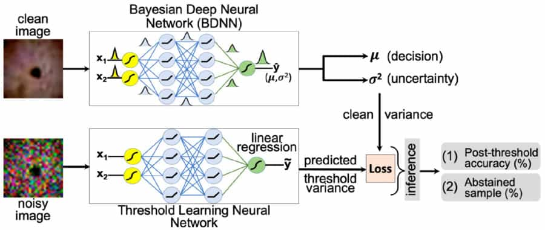

Failure Detection in Deep Neural Networks for Medical Imaging
Deep neural networks (DNNs) have started to find their role in the modern healthcare system. DNNs are being developed for diagnosis, prognosis, treatment planning, and outcome prediction for various diseases. With the increasing number of applications of DNNs in modern healthcare, their trustworthiness and reliability are becoming increasingly important. An essential aspect of trustworthiness is detecting the performance degradation and failure of deployed DNNs in medical settings. The softmax output values produced by DNNs are not a calibrated measure of model confidence. Softmax probability numbers are generally higher than the actual model confidence. The model confidence-accuracy gap further increases for wrong predictions and noisy inputs. We employ recently proposed Bayesian deep neural networks (BDNNs) to learn uncertainty in the model parameters. These models simultaneously output the predictions and a measure of confidence in the predictions. By testing these models under various noisy conditions, we show that the (learned) predictive confidence is well calibrated. We use these reliable confidence values for monitoring performance degradation and failure detection in DNNs. We propose two different failure detection methods. In the first method, we define a fixed threshold value based on the behavior of the predictive confidence with changing signal-to-noise ratio (SNR) of the test dataset. The second method learns the threshold value with a neural network. The proposed failure detection mechanisms seamlessly abstain from making decisions when the confidence of the BDNN is below the defined threshold and hold the decision for manual review. Resultantly, the accuracy of the models improves on the unseen test samples. We tested our proposed approach on three medical imaging datasets: PathMNIST, DermaMNIST, and OrganAMNIST, under different levels and types of noise. An increase in the noise of the test images increases the number of abstained samples. BDNNs are inherently robust and show more than 10% accuracy improvement with the proposed failure detection methods. The increased number of abstained samples or an abrupt increase in the predictive variance indicates model performance degradation or possible failure. Our work has the potential to improve the trustworthiness of DNNs and enhance user confidence in the model predictions.